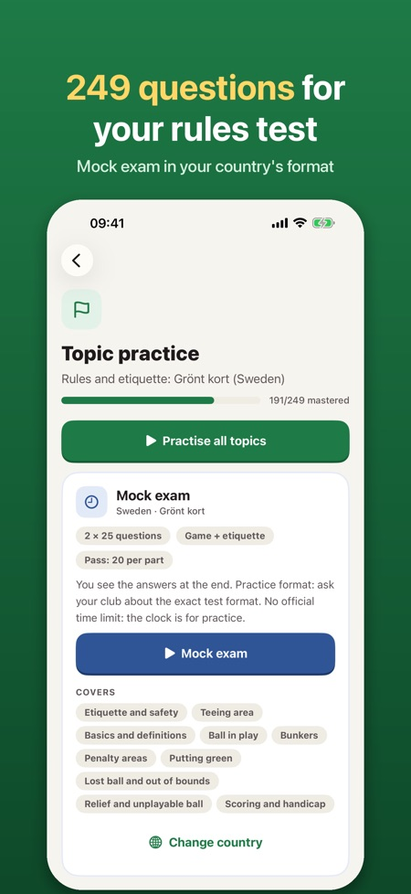
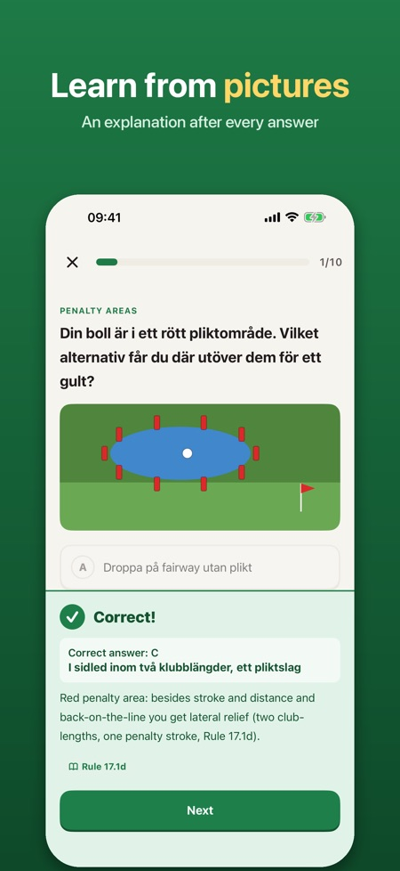
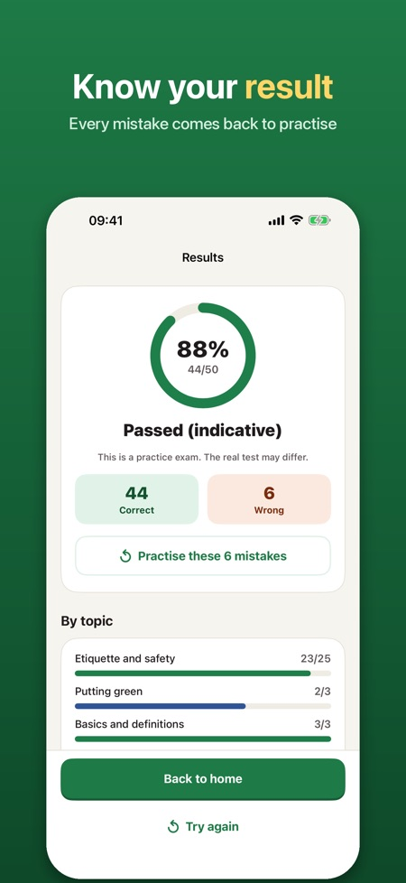

Get ready for the golf rules and etiquette test beginners take: the Grönt kort test in Sweden, the Green Card in Finland or the Turnier-Lizenz test in Austria. Each answer comes with an explanation.



The Grönt kort knowledge test in Sweden, the Green Card test in Finland and the Turnier-Lizenz rules test in Austria. In Norway, where "Veien til golf" has replaced the test, it helps you learn the rules.
249 questions in 10 topics.
Sweden 2 x 25 questions (at least 20 per part), Finland 15 rules plus 15 etiquette, Austria 31 questions (pass at 20 correct) and a 20-question quiz for Norway.
English, Norwegian, Swedish, Finnish or German. Choose your country and the questions follow the language of its test.
Yes, it works offline, with no account and no ads.
No. You unlock everything with a single purchase. Ten sample questions, one short mock exam, the rules lookup and the checklist are included without a purchase.
No. All questions and rule summaries are written by us, and the app is not affiliated with any golf federation. Ask your club how the test is taken.
Get ready for the golf rules and etiquette test beginners take: the Grönt kort knowledge test in Sweden, the Green Card test in Finland or the Turnier-Lizenz rules test in Austria. In Norway, where the course “Veien til golf” has replaced the test, use it to learn the rules before your first round. Pay once, no subscription.
WHAT'S INSIDE
• 249 questions in 10 topics: etiquette and safety, teeing area, basics, ball in play, bunkers, penalty areas, putting green, lost ball and out of bounds, relief and unplayable ball, scoring and handicap
• Picture questions with drawn course situations (penalty areas, boundary stakes, teeing area, cart path)
• An explanation after every answer, in English, Norwegian, Swedish, Finnish or German
• Mock exam in each country's format: Sweden 2 × 25 (at least 20 per part), Finland 15 rules + 15 etiquette, Austria 31 (pass at 20 correct), Norway a 20-question quiz
• Your mistakes come back until you have answered them right twice in a row
• Rules lookup: short plain-language answers to "What do I do when…?", with the rule number
• First-round checklist: what to bring and how to behave on the course
YOUR COUNTRY, YOUR LANGUAGE
Choose your country and the questions appear in the language of its test: Norwegian, Swedish, Finnish or German. Buttons and explanations follow the language you pick.
FAIR PRICE
Ten sample questions, one short mock exam, the rules lookup and the checklist are included without a purchase. Unlock everything with a single purchase. No subscription, no ads, no account. Works offline.
The exact test format differs between countries and clubs; the mock exam is practice, so ask your club how the test is taken.
This app is independent and not affiliated with Norges Golfforbund, Svenska Golfförbundet, Suomen Golfliitto, the Österreichischer Golf-Verband, The R&A or the USGA. All questions and rule summaries are written by us; they are not official test questions or rule text.